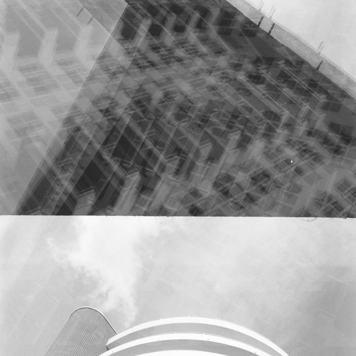
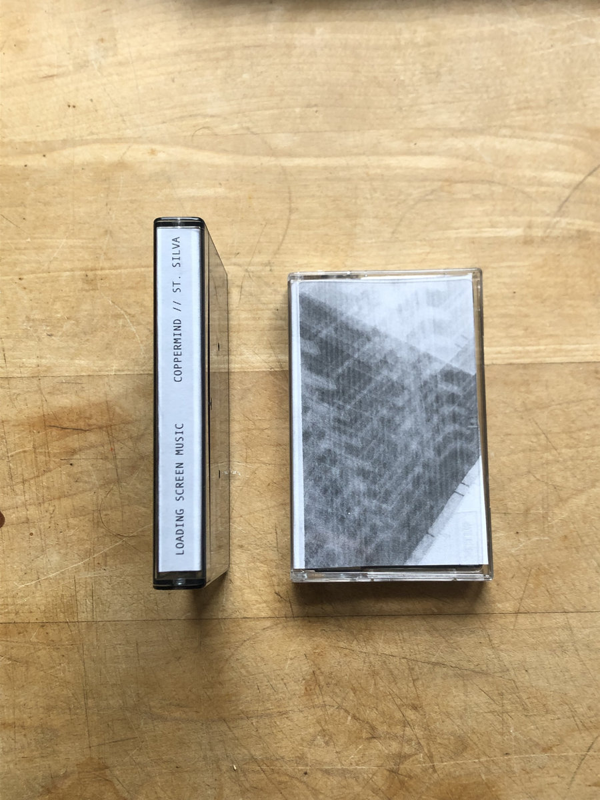

Posted on 2024-06-24 00:00:00 -0400
[ release ]
Last Friday I released a new collaborative album, Loading Screen Music, with my friend Ian Steinberg (performing as Coppermind). The album was created using a slightly unusual technique for recording piano combined with electronic processing / sampling. It is a lo-fi, ambient, piano instrumental with 10 tracks.
The idea is in the title: a nostalgic re-imagination of interstitial music played on the loading screen of video games (or movies on the dvd menu). Part improvised collage and part composed, Loading Screen Music is meant to place listeners in my childhood memory of Nintendo64’s and Macintosh computers (pre-apple days).
The album started by Ian sending me some piano improvisations to see what I might add to them. After listening to Ian’s raw piano tracks, I wanted to accentuate the crunchy, far away feelings captured in the reflected piano sound. I set about creating textures underneath these melodies through granular processing, re-sampling, and otherwise mangling the piano sounds. For the most part I limited myself to this source material. By creating new re-pitched splices I found new and unusual artifacts coming through, pops and clicks and resonances that otherwise may have been missed. The result is a sort of echo of the original performance, closely related but evolved into something new.
The upright piano was recorded using a single Peluso 414 in figure eight pattern. The lid was removed from the piano and the mic was placed vertically above it, with the null point facing down into the soundboard. This allowed it to mostly capture the reflected sounds as opposed to the direct strings, giving it a mellower tone. It was then processed with heavy compression to bring up all the artifacts and intricacies of the piano’s action, adding to the percussive nature.

It was such a joyful creative process making this album together with Ian. When the album was finished I wanted to commemorate the moment with a physical release. And a I’ve been incorporating tape loops into my live sets, the cassette felt like the obvious choice. We duplicated a limited run of 13 copies at home, on an old Tascam Porta 05. Local musician and photographer Cam Gilmour contributed the photo print as album art.
To celebrate the release, we performed a few tracks from the album live at Ethereal Bloom on June 21st. We hope you enjoy this tribute to a time past, a rewinding of nostalgia.